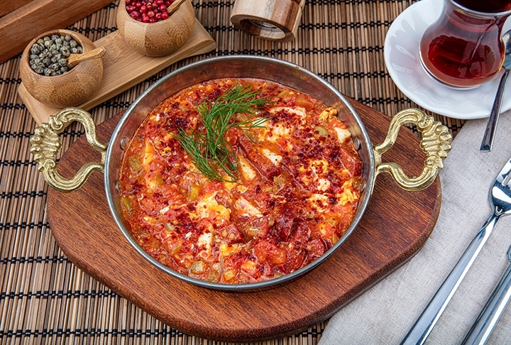

Menemen

Description
Menemen, temel olarak yumurta, biber ve domatesle yapilan, tartismali ve isteğe bağli olarak soğanli yapilan bir yemektir.
Ingredients
- 1 adet domates
- 1 adet köy biberi
- 1 yemek kaşiği zeytinyaği
- 1 tatli kaşiği Knorr Kahvalti İçin Çeşni
Instructions
- Heat oil add tomatoes.
- Add pepper and salt
- Crack egg cook for 2 more minutes
Return to Main Page